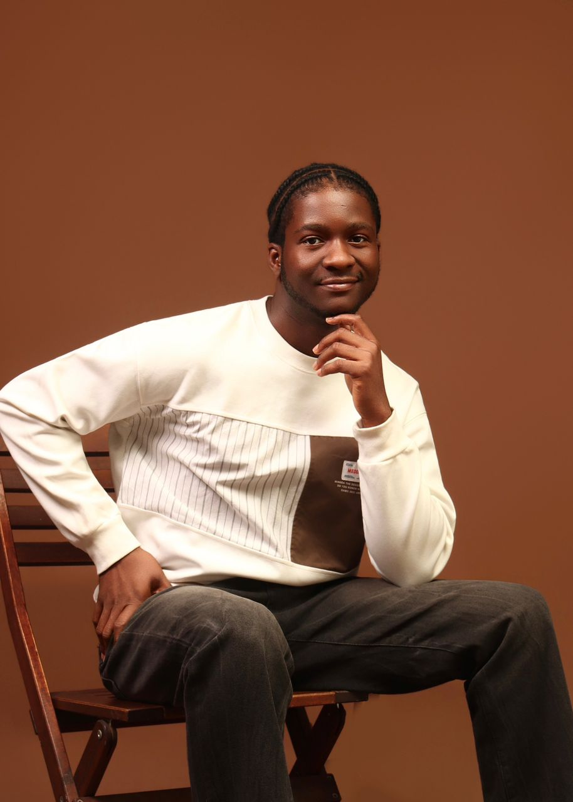

I don't just use AI. I know when to trust it — and when not to.
I've automated repetitive work, delegated what didn't need me, and stepped in myself when judgment — not speed — was what the task actually needed. That's the skill I'm selling: knowing which is which.
Three judgment calls, under load
Data annotation & edge-case judgment
I automated the repetitive parts of an image-labeling pipeline, but when an edge case broke the stated guidelines — an inanimate object that technically fit the “animal” criteria — I flagged it rather than force a label. That flag fed directly into a guideline update, so future annotators handle similar ambiguous cases consistently instead of guessing.
Delegating code, owning the verification
For a Week 1 ML exercise, I delegated the pipeline code to Claude — I don't code, and there was no reason to pretend otherwise. My job was reading the result correctly: an initial near-zero correlation between keyword search volume and actual page traffic could've just been noise from zero-impression pages, so I had it re-run filtered to active pages only. The correlation held.
Content archetype clustering: catching a bug the script wouldn't have flagged
Businesses with large content inventories rarely have a real system for catching what's working and what isn't — it's manual, inconsistent, or it just doesn't happen. I'm building toward closing that gap with a content archetype clustering model. I delegated the initial data pull and clustering setup to Claude, working off FlyRank's own dataset. The output looked fine until I checked it: one metric showed an average CTR of 2.7 for an article — impossible, since CTR caps at 1.0. I asked Claude to check the distribution and found 5.6% of 30,000 rows had inconsistent scaling (percentages mixed with decimals). I verified the raw cell output myself before authorizing the fix, then made the call to apply it — knowingly an inferred solution, not a root-cause-proven one.
No coding background.
That's not the pitch.

I'm Victor Ezeani. I'm currently in FlyRank's 8-week AI/ML internship, working across general AI fluency and applied ML — including hands-on data annotation, my first real ML pipeline work, and ongoing content archetype clustering work, all covered above.
I came into this without a coding background. What I bring instead is judgment: knowing when AI execution is enough, and when a result needs a human check before it's trusted. That's the skill this internship is sharpening, and it's the one I'm offering.
I'm remote-ready now, and open to relocating for the right opportunity.
If this is the thinking you want on your team
I'll respond promptly and I'm ready to talk specifics — the judgment calls above, or anything else.
vezeani22@gmail.com